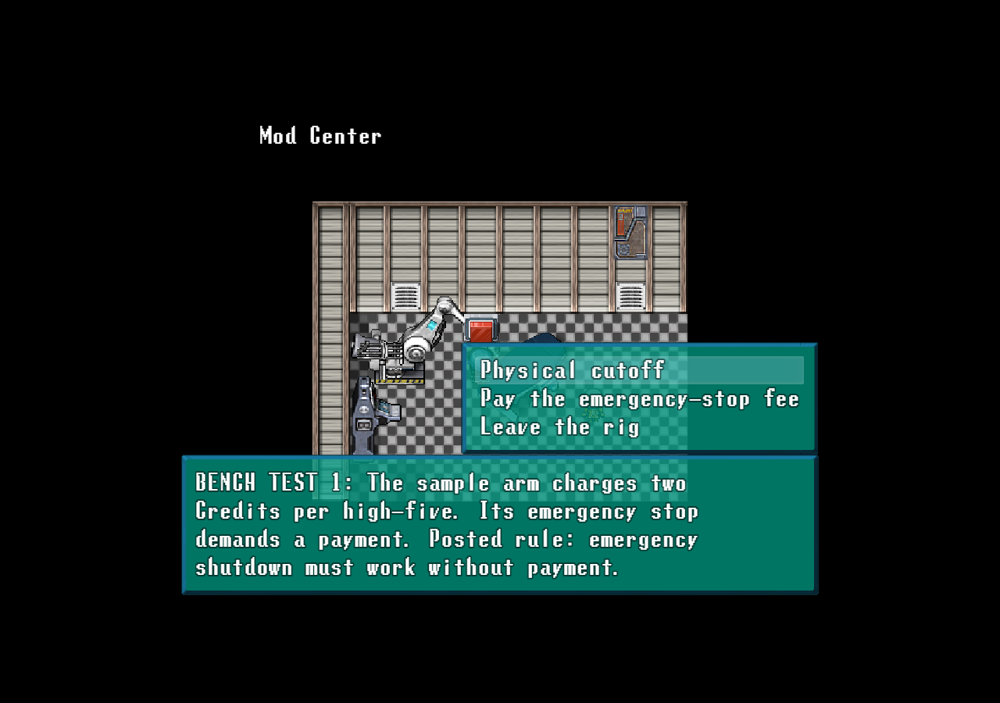
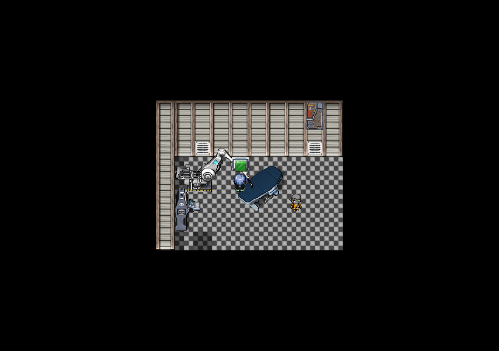
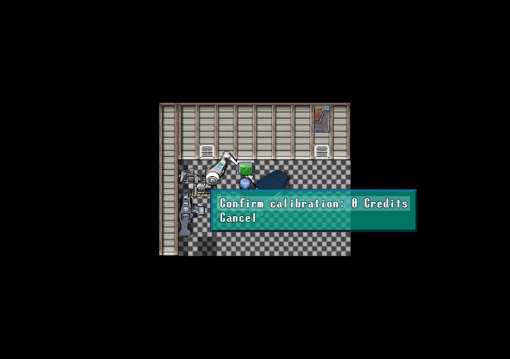
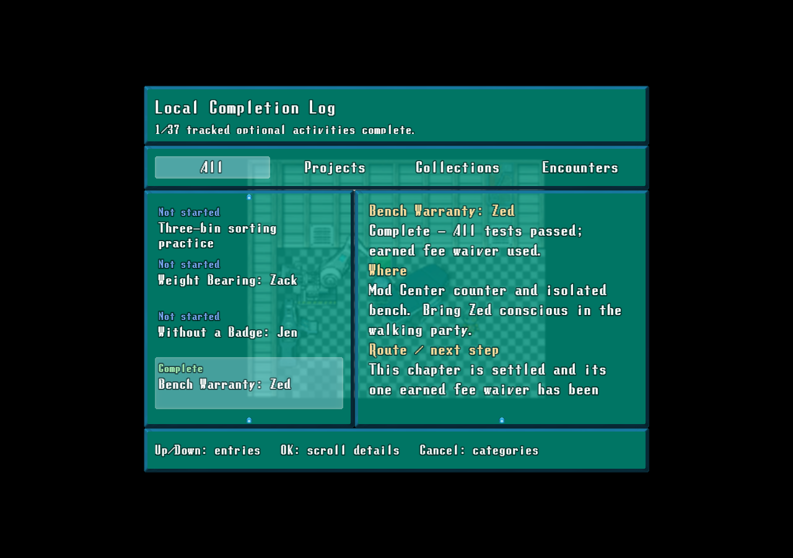

Three isolated testsEmergency cutoff, removal behavior and owner control. Safe retries; leaving retains passed stages.
Completed rigZed earns200 personal EXP and one calibration-fee waiver. Repeats do not pay again.
The actual fee is visibleThe waiver covers one valid calibration. You still supply the prototype; buying it remains500 Credits.
Durable completionThe log tracks the earned/spent waiver and now includes30 optional activities.